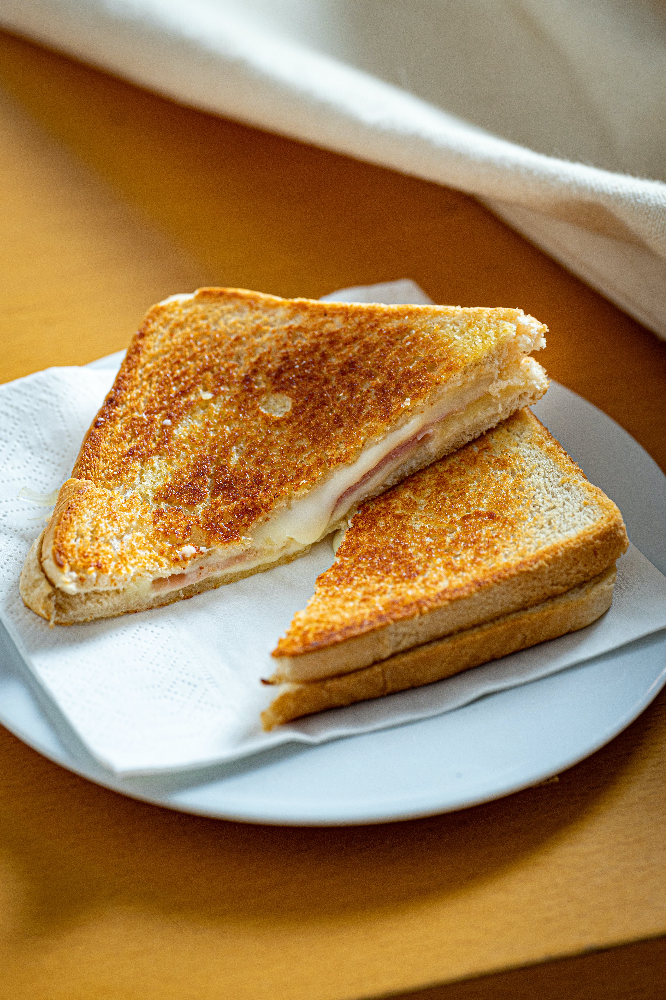

Grilled Cheese
Grilled Cheese

Grilled Cheese
Grilled cheese is my go to comfort food. The texture of the grilled bread in combinaition
with the melted cheese is hard to beat. It is also a quick and easy food to make.
The ingredients are simple and most often on hand. I make this recipe for myself of my son at least once a week.
I hope you enjoy it as much as I do!
Ingredients
- Butter
- Bread of choice, 2 pieces- lots of types of bread work here, choose your favorite.
- Cheese- again, lot's of choices, choose wisely.
Steps
- Firstly, turn on the burner to warm a flat pan with enough room to fit your sandwich on to a medium heat .
- Now you are going to butter one side of each piece of bread evenly.
- Place your cheese on the top of one slice of bread. You can put as much or little cheese as you like here, I like to cover the bread in 1 to 2 layers.
- Place the cheese and bread butter side down onto the warm pan and put the second slice butter side up on top.
- Here is the hard part. You need to let the sandwich cook till the bread is golden brown.
- Once the bread is cooked to perfection you can carefully flip the sandwich to the other side.
- Again you are going to wait till the bread is a golden brown color.
Thats it! You are done and your sandwich is reaady to eat